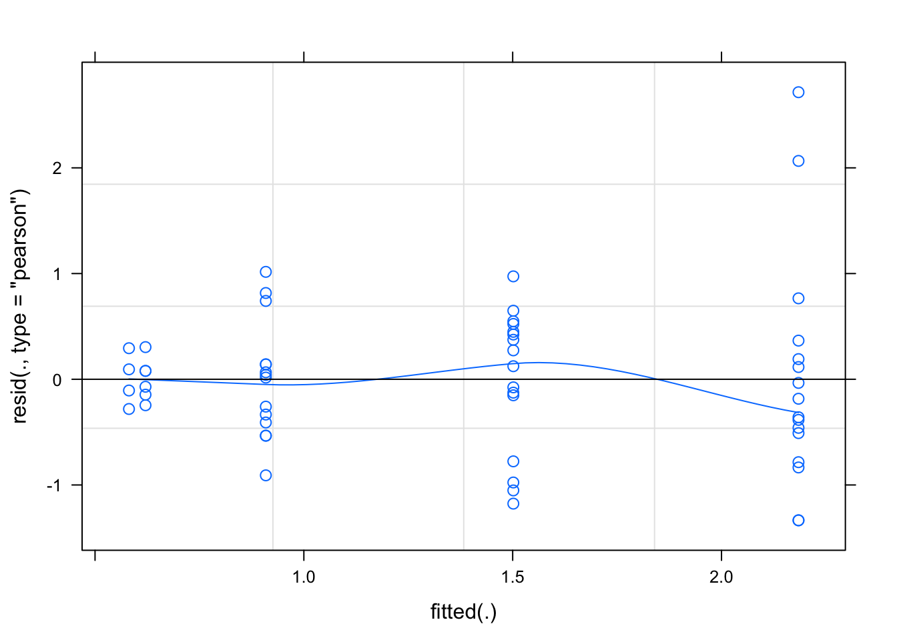
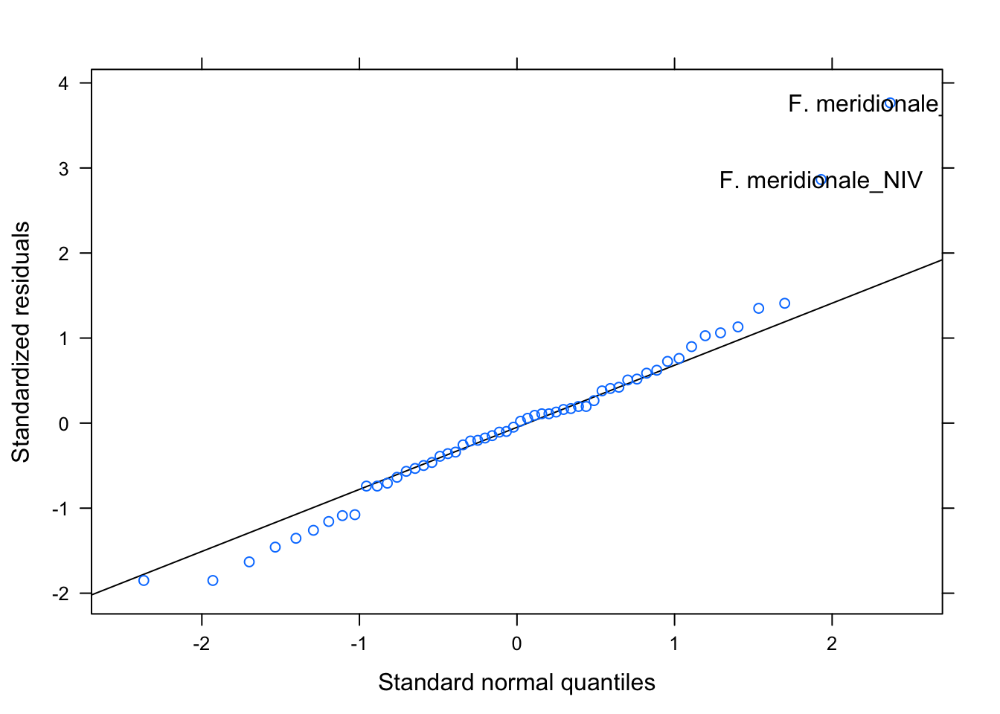
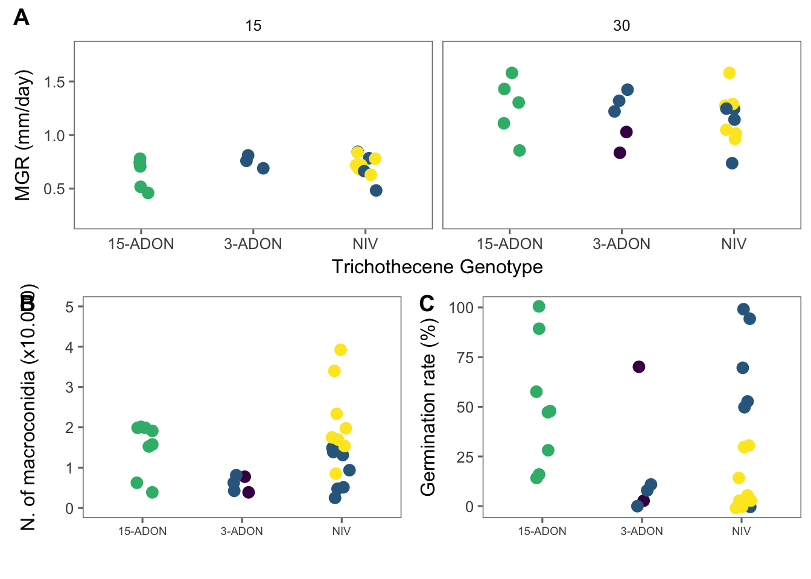
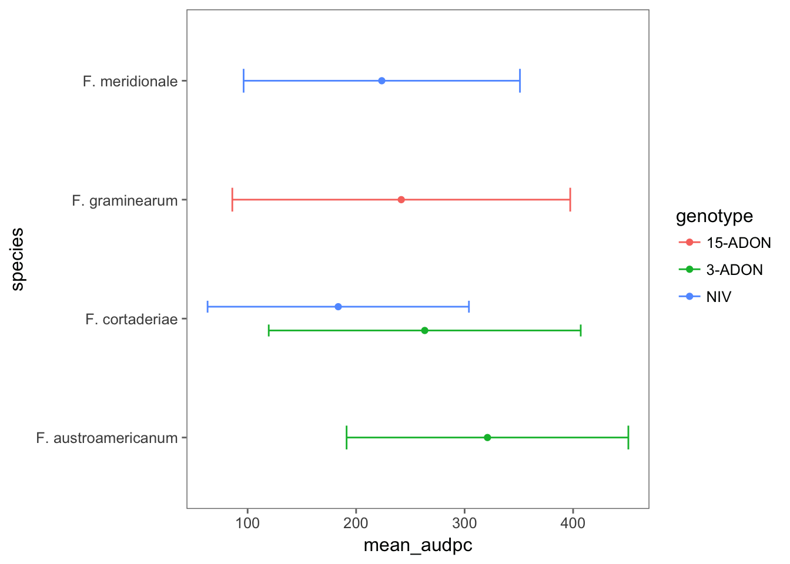
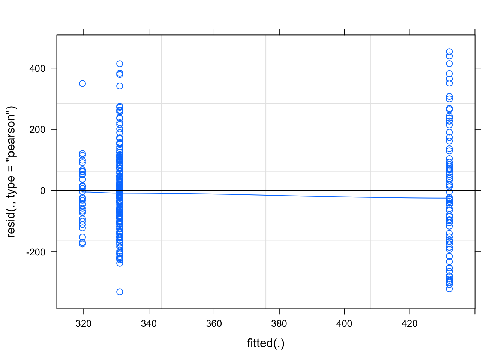
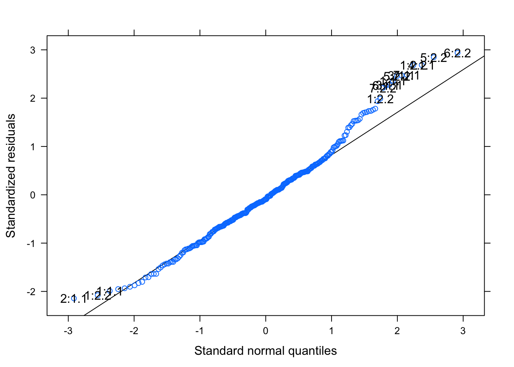

Code
General approach
The data com from a series of different experiments. There is one single xlsx file with each experiment in a single sheet. A single csv file was created from exporting each of those sheets. We will conduct the analysis separated for each experiment. Follows the commented code used for these analyses separated per experiment.
Load packages
library(tidyverse)
library(readxl)
library(viridis)
library(ggthemes)
library(lme4)
library(cowplot)
library(broom)
library(agricolae)
library(lattice)
library(influence.ME)Perithecia production
Import
Let’s first import the data and have a look at the raw data.
perithecia <- read_csv("./data/perithecia.csv") %>%
filter(genotype != "t")
peritheciaTransform
The data were prepared in the wide format where each score for percent perithecia coverage (0 -3) is in a separate colum. Let’s transform this dataframe from the wide to the long format using gather function of dplyr. We need to create a column for the variable name and another for the score.
perithecia2 <- perithecia %>%
gather("score", "frequency", 8:11)
perithecia2Visualize
Let’s have a look at the frequency of the scores for each species-genotype separated for each substrate. This is a good plot to show in the paper.
g1 <- perithecia2 %>%
ggplot(aes(reorder(genotype, -ppi), frequency, fill = score)) +
geom_bar(stat = "identity", position = "fill") +
facet_wrap(~substrate) +
theme_few() + # load ggthemes
theme(axis.text.x = element_text(angle = 45, hjust = 1)) +
labs(x = "", y = "Proportion of grains", fill = "Score") +
scale_fill_viridis(discrete = TRUE)
g1
Model
Since we have one species which has two genotypes, it may be important, besides testing the effect of species or genotype in the model, to create a species*genotype interaction variable and fit a mixed model to test the effect of this variable on the perithecial production index (ppi), so that the two genotypes of one species can be compared.
# creating the variable
perithecia <- perithecia %>%
unite(species_genotype, species, genotype, sep = "_", remove = F)Now we fit the model using lmer function. We treat Isolate as a random effects.
glmm_per <- lmer(
ppi ~ species_genotype * substrate + (1 | Isolate),
data = perithecia, REML = FALSE
)Let’s check the single and interaction effects.
library(car)
Anova(glmm_per)Evaluate the model
library(lattice)
plot(glmm_per, type = c("p", "smooth"))
qqmath(glmm_per, id = 0.05)
Means comparison
Not too bad. Let’s now compare the means of treatments and create a dataframe which will be use to further create a plot with the estimated means and confidence interval. We used the emmeans package which is an update for the old lsmeans package. The syntax is the same as before.
library(emmeans)
medias <- emmeans(glmm_per, ~ species_genotype * substrate)
med <- cld(medias, Letters = LETTERS, alpha = .05)
# make output as a dataframe
med <- data.frame(med)
head(med)Figures
This new med dataframe does not contain the two original variables we want to use to plot the data. Let’s separate the species_genotypes variable and create genotype and species.
med2 <- med %>%
separate(species_genotype, c("species", "genotype"), sep = "_", extra = "merge")
# extra argument was used to keep the genotype information alltogether
head(med2)We now produce the plot with point estimate for the means and error bars for the 95%CI of the ppi for each genotype. We add species to the legend when using color argument.
g2 <- med2 %>%
ggplot(aes(reorder(genotype, -emmean), emmean, color = species)) +
geom_point(position = position_dodge(width = 0.3)) +
theme_few() +
theme(legend.position = "right", legend.text = element_text(size = 6, face = "italic"), axis.text.x = element_text(angle = 45, hjust = 1)) +
scale_color_viridis(discrete = TRUE) +
facet_wrap(~substrate) +
geom_errorbar(
aes(ymin = lower.CL, ymax = upper.CL),
width = 0.2, position = position_dodge(width = 0.3)
) +
labs(y = "Perithecia production index (%)", x = "Trichothecene genotype")
g2
Finally, we prepare and save the Figure 1 of the manuscript which is a combo figure with the the two previous plots for both the original scores and the normalized index. We use the plot_grid function of the cowplot package for this.
grid1 <- plot_grid(g1, g2, labels = c("A", "B"), align = "hv", ncol = 1)
ggsave("figs/grid1.png", grid1, width = 6, height = 6)Mycelial growth
Import
There is one xlsx file with data from a single experiment. We will use read_excel to correctly load the centigrades symbol for the temperature factors after setting locale to pt_BR.UTF-8.
Sys.setlocale("LC_ALL", "pt_BR.UTF-8")## [1] "pt_BR.UTF-8/pt_BR.UTF-8/pt_BR.UTF-8/C/pt_BR.UTF-8/C"mgr <- read_excel("./data/mycelia.xlsx")
head(mgr)Visualize
We will now produce the plot with the means of mycelial growth rate for each species-genotype and temperature. This will be the final plot for publication.
mgr1 <- mgr %>%
group_by(isolate, genotype, species, temperature) %>%
summarize(mean_mgr = mean(mgr)) %>%
ggplot(aes(factor(genotype), mean_mgr, color = species)) +
geom_jitter(width = 0.1, size = 3) +
facet_wrap(~temperature) +
scale_color_viridis(discrete = TRUE) +
theme_few() +
theme(
legend.position = "none",
legend.text = element_text(size = 7, face = "italic")
) +
labs(
x = "Trichothecene Genotype",
y = "Mycelial growth rate (mm/day)", color = "Species"
) +
ylim(0.2, 1.8)Model
Let’s fit a mixed model for the mgr data. We first test the effect of the interaction.
mgr <- mgr %>%
unite(species_genotype, species, genotype, sep = "_", remove = F)
lmer_mgr <- lmer(mgr ~ species_genotype * temperature + (1 | species_genotype / isolate), data = mgr, REML = FALSE)## fixed-effect model matrix is rank deficient so dropping 1 column / coefficientAnova(lmer_mgr)We now create different datasets for each temperature and test the effect of species_genotype within each temperature.
# 15 C
mgr15 <- mgr %>%
filter(temperature == "15 °C")
lmer_mgr15 <- lmer(mgr ~ species_genotype + (1 | species_genotype / isolate), data = mgr15, REML = FALSE)
Anova(lmer_mgr15)# 30 C
mgr30 <- mgr %>%
filter(temperature == "30 °C")
lmer_mgr30 <- lmer(mgr ~ species_genotype + (1 | species_genotype / isolate), data = mgr30, REML = FALSE)
Anova(lmer_mgr30)We can see that there are no effect of species_genotype in the mgr within each of the temperatures.
Sporoulation & Germination
In this experiment, the production of macroconidia and further germination of 20 randomly selected spores of the different strains of the species-genotype combination, were evaluated in two runs of the experiment.
Import
spor <- read_csv("./data/spor.csv")
# again, we create the species_genotype variable
spor <- spor %>%
unite(species_genotype, species, genotype, sep = "_", remove = F)
head(spor)Visualize
The code below will produce plots for total macroconidia production and percent germinated spores.
library(scales)
spor1 <- spor %>%
group_by(species, genotype, isolate) %>%
summarize(mean_spor = mean(spores_ml))
spor2 <- spor1 %>%
ggplot(aes(genotype, mean_spor, color = species)) +
geom_jitter(width = 0.1, size = 3) +
theme_few() +
scale_color_viridis(discrete = TRUE) +
theme(legend.position = c(1, 5), axis.text.x = element_text(angle = 0, hjust = 0.5, size = 7), legend.text = element_text(size = 7, face = "italic"), axis.title = element_text(size = 8)) +
labs(x = "", y = "Macroconidia count (x 10.000)", color = "Species") +
ylim(0, 5) +
guides(colour = guide_legend(nrow = 2))germ1 <- spor %>%
group_by(species, genotype, isolate) %>%
summarize(mean_germ = mean(germp))
germ <- germ1 %>%
ggplot(aes(genotype, mean_germ, color = species)) +
geom_jitter(width = 0.1, size = 3) +
theme_few() +
scale_color_viridis(discrete = TRUE) +
theme(legend.position = "none", axis.text.x = element_text(angle = 0, hjust = 0.5, size = 7), legend.text = element_text(size = 7, face = "italic"), axis.title = element_text(size = 8)) +
labs(x = "", y = "Germination rate (%)", color = "Species") +
guides(colour = guide_legend(nrow = 2))Model
Anova model
lmer_spor <- lmer(spores_ml ~ species_genotype + (1 | species_genotype), data = spor, REML = FALSE)
Anova(lmer_spor)plot(lmer_spor, type = c("p", "smooth"))
qqmath(lmer_spor, id = 0.05)
Means comparison
medias <- emmeans(lmer_spor, ~species_genotype)
med <- cld(medias, Letters = LETTERS, alpha = .05)
med <- data.frame(med)
medFigure
grid1 <- plot_grid(spor2, germ, labels = c("B", "C"), ncol = 2, align = "hv")
grid5 <- plot_grid(mgr1, grid1, labels = c("A"), rel_heights = c(1, 1), ncol = 1, align = "hv")
ggsave("figs/mgr_spor_germ.png", grid5, width = 5, height = 5)
grid5
Pathogenicity tests
Import
pathogen <- read_csv("./data/pathogenicity.csv")
pathogen <- pathogen %>%
filter(isolate != "test")Transform
Let’s prepare several summary statistics for the disease variables per cultivar. We will calculate the mean and standard deviation of proportion of diseased spikelets.
# preparing cultivar 194
pathogen_194 <- pathogen %>%
filter(cultivar == "BRS 194") %>%
select(1:7, 9, 11, 12, 13) %>%
gather(position, count, 8:9) %>%
# filter(exp == 2) %>%
group_by(cultivar, dai, genotype, species) %>%
summarize(
mean_sev = mean(sev),
sd_sev = sd(sev)
)
# preparing Guamirim
pathogen_Gua <- pathogen %>%
filter(cultivar == "BRS Guamirim") %>%
select(1:7, 9, 11:13) %>%
gather(position, count, 8:9) %>%
# filter(exp == 2) %>%
group_by(cultivar, dai, genotype, species, position) %>%
summarize(
mean_sev = mean(sev),
sd_sev = sd(sev)
)Let’s calculate the area under the curve for each isolate. For this, we will use the audpc function of the agricolae package. First, we need to group several variables up to dai (days after inoculation). To make our life easier, lets use the do in conjuction with the tidy functions of the dplyr and broom package, respectively. This will calculate the audpce for each spike.
audpc_194 <- pathogen %>%
filter(cultivar == "BRS 194") %>%
# filter(exp == 2) %>%
unite(species_genotype, species, genotype, sep = "_", remove = F) %>%
select(
exp, cultivar, dai, isolate, species_genotype, species, genotype, spike,
sev
) %>%
group_by(exp, isolate, species_genotype, species, genotype, spike, dai) %>%
summarize(mean_sev = mean(sev)) %>%
do(tidy(audpc(.$mean_sev, .$dai)))
names(audpc_194)[8] <- "audpc"audpc_gua <- pathogen %>%
filter(cultivar == "BRS Guamirim") %>%
# filter(exp == 2) %>%
unite(species_genotype, species, genotype, sep = "_", remove = F) %>%
select(
exp, cultivar, dai, isolate, species_genotype, species, genotype, spike,
sev
) %>%
group_by(exp, isolate, species_genotype, species, genotype, spike, dai) %>%
summarize(mean_sev = mean(sev)) %>%
do(tidy(audpc(.$mean_sev, .$dai)))
names(audpc_gua)[8] <- "audpc"Visualize
audpc_194 %>%
group_by(species, genotype) %>%
summarize(
mean_audpc = mean(audpc),
sd_audpc = sd(audpc)
) %>%
ggplot(aes(species, mean_audpc, color = genotype)) +
coord_flip() +
theme_few() +
geom_point(position = position_dodge(width = 0.4)) +
geom_errorbar(aes(min = mean_audpc - sd_audpc, max = mean_audpc + sd_audpc), position = position_dodge(width = 0.4), width = 0.2)
audpc_gua %>%
group_by(species, genotype) %>%
summarize(
mean_audpc = mean(audpc),
sd_audpc = sd(audpc)
) %>%
ggplot(aes(species, mean_audpc, color = genotype)) +
coord_flip() +
theme_few() +
geom_point(position = position_dodge(width = 0.4)) +
geom_errorbar(aes(min = mean_audpc - sd_audpc, max = mean_audpc + sd_audpc), position = position_dodge(width = 0.4), width = 0.2)
Model
BRS Guamirim
mix_gua <- lmer(
audpc ~ genotype +
(1 | exp/spike),
data = audpc_gua, REML = FALSE
)Evaluate the model
plot(mix_gua, type = c("p", "smooth"))
qqmath(mix_gua, id = 0.05)
Anova(mix_gua)library(emmeans)
means <- emmeans(mix_gua, ~ genotype)
cld(means)mix_194 <- lmer(log(audpc) ~ genotype + (1 | exp / spike), data = audpc_194, REML = FALSE)Evaluate the model
plot(mix_194, type = c("p", "smooth"))
qqmath(mix_194, id = 0.05)
BRS 194
Anova(mix_194)library(emmeans)
means <- emmeans(mix_194, ~ genotype)
cld(means)